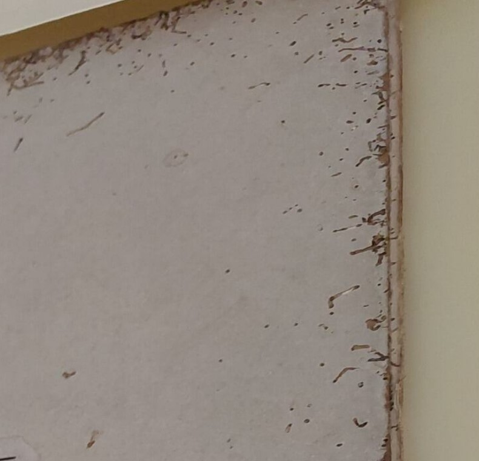
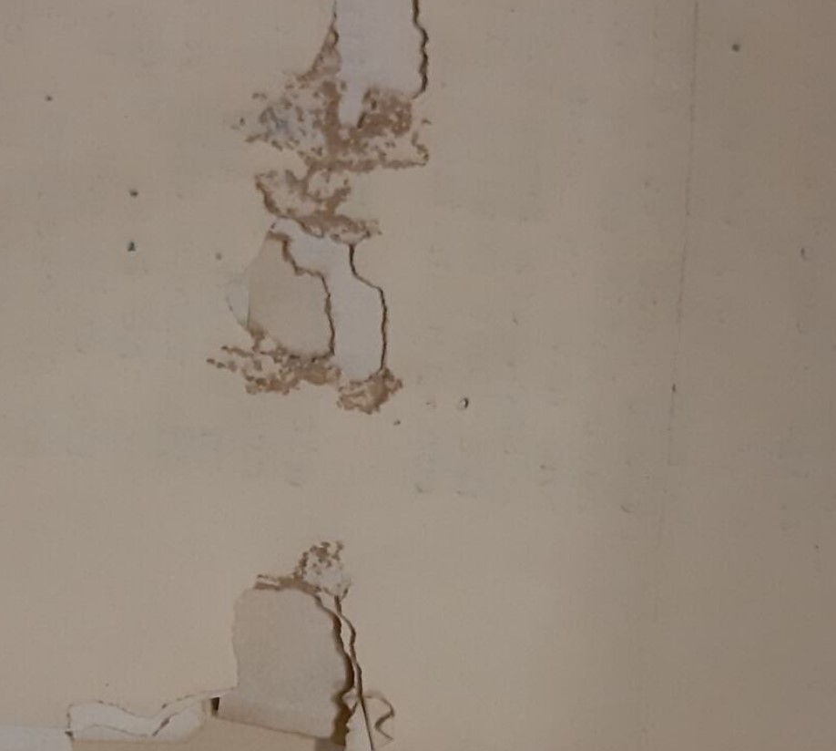
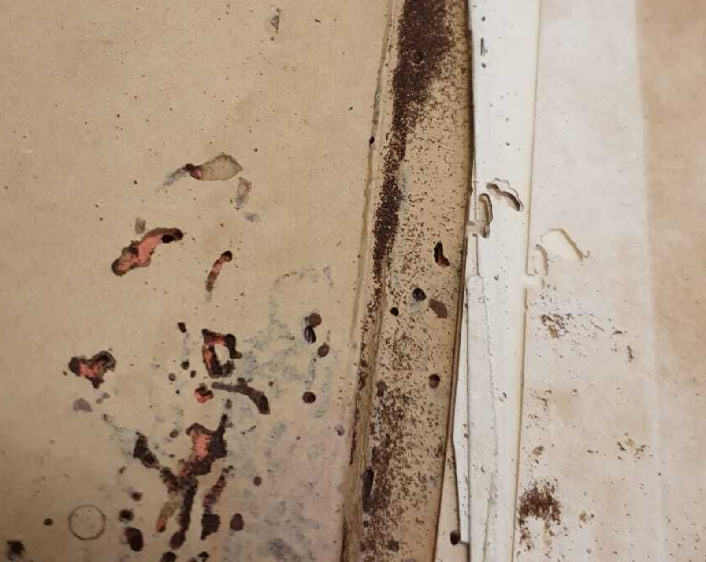

Insect Damage

Extensive insect damge of the book cover along the sides
Extensive losses caused by insect damage
Extensive insect damage accompanied by frass (insect excrement)
Description
Physical damage to support and/or media as a result of destructive contact with insects. Damage may appear as surface thinning, losses, or as accretions, such as flyspecks.
Treatment Notes
- Anoxic treatment to ensure the pest infestation is under control
- For areas affected by the pest damage, surface cleaning first before assessing with collection owners if further stabilisation or targeted repair is possible.
Materials Affected
Paper, Book, Textile